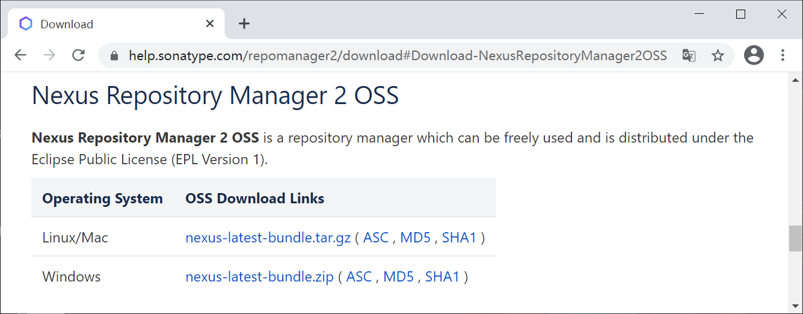
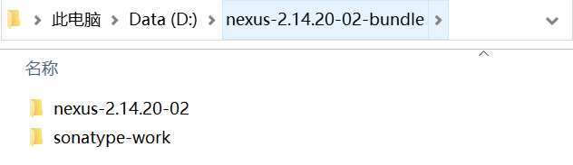
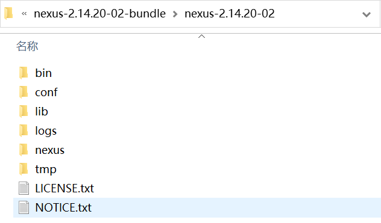
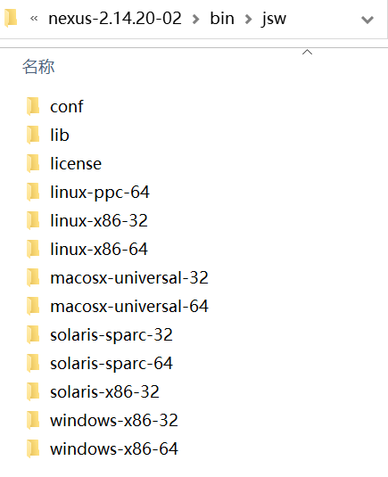
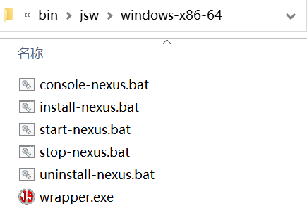
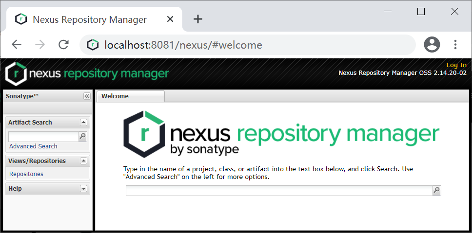
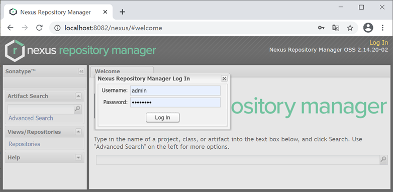
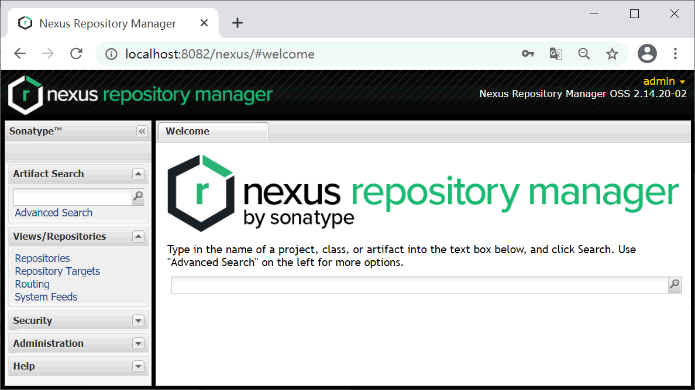

Nexus下载和安装
目前 Nexus 分为 Nexus 2.x 和 Nexus 3.x 两个大版本，它们是并行的关系，目前使用最多，运行最稳定的是 Nexus 2.x，下面我们以 Nexus 2.x 为例，演示 Nexus 的安装过程。
1. 进入 Nexus 2.x 下载页面，根据本机操作系统，选择对应的版本进行下载，如下图所示。
2. 将下载 Nexus 安装包解压到本地磁盘，可获得 nexus-2.14.20-02 和 sonatype-work 2 个目录，如下图。
3. nexus-2.14.20-02 中包含以下目录及文件。
4. .进入 \nexus-2.14.20-02\bin\jsw 文件夹，根须操作系统版本选择合适的目录，由于我的操作系统是 Windows 10 64 位，所以我选择 windows-x86-64 目录，如下图所示。
5. 进入 windows-x86-64 目录后可以看到如下文件。
其中：
8. 点击首页右上角的“Log In”按钮，在登录页面输入用户名和密码（默认分别为：admin 和 admin123 )，最后点击“Log In”按钮登录。
9. 登录成功后，结果如下图。
1. 进入 Nexus 2.x 下载页面，根据本机操作系统，选择对应的版本进行下载，如下图所示。

图1：Nexus 2.x 下载页面
2. 将下载 Nexus 安装包解压到本地磁盘，可获得 nexus-2.14.20-02 和 sonatype-work 2 个目录，如下图。

图2：Nexus 2.x 目录
其中：
- nexus-2.14.20-02：该目录中包含了 Nexus 2.x 运行所需要的文件，如启动脚本、依赖 jar 包等。
- sonatype-work：该目录中包含了 Nexus 2.x 生成的配置文件、日志文件等。
3. nexus-2.14.20-02 中包含以下目录及文件。

图3：nexus-2.14.20-02 目录及文件列表
nexus-2.14.20-02 目录说明，如下表所示。| 子目录 | 说明 |
|---|---|
| bin | 命令中心（启动命令，关闭命令） |
| conf | 配置中心（管理着仓库列表、日志配置，以及安全设置） |
| lib | Nexus 的库文件，Nexus 运行时需要的 jar 包所在的目录 |
| logs | 存放日志文件 |
| nexus | Nexus 应用程序 |
| tmp | 存放Nexus 运行时产生的临时文件 |
4. .进入 \nexus-2.14.20-02\bin\jsw 文件夹，根须操作系统版本选择合适的目录，由于我的操作系统是 Windows 10 64 位，所以我选择 windows-x86-64 目录，如下图所示。

图4：nexus-2.14.20-02\bin\jsw 目录列表
5. 进入 windows-x86-64 目录后可以看到如下文件。

图5：Nexus 启动文件列表
其中：
- console-nexus.bat：启动 Nexus 并在 DOS 命令行中展示启动过程。
- install-nexus.bat：将 Nexus 安装为 Windows 服务，开机自动启动。
- start-nexus.bat：启动 Nexus。
- stops-nexus.bat：停止 Nexus。
- uninstall-nexus.bat：与 install-nexus.bat 相对应，负责卸载 Nexus 服务。
6. 双击运行 install-nexus.bat 安装 Nexus 服务，然后运行 start-nexus.bat 启动服务。
7. 访问 http://localhost:8081/nexus，结果如下图，则表示服务启动成功，否则表示服务启动失败。注意：
- 运行 install-nexus.bat 安装服务，若提示”wrapper | OpenSCManager failed - 拒绝访问。 (0x5)“，只要关闭窗口，以管理员身份运行即可解决。
- 运行 start-nexus.bat 启动服务，若提示”wrapper | OpenSCManager failed - 拒绝访问。 (0x5)“，只要关闭窗口，以管理员身份运行即可解决。

图6：Nexus 首页
8. 点击首页右上角的“Log In”按钮，在登录页面输入用户名和密码（默认分别为：admin 和 admin123 )，最后点击“Log In”按钮登录。

图7：Nexus 登录界面
9. 登录成功后，结果如下图。

图8：Nexus 登录成功
关注公众号「站长严长生」，在手机上阅读所有教程，随时随地都能学习。内含一款搜索神器，免费下载全网书籍和视频。

微信扫码关注公众号